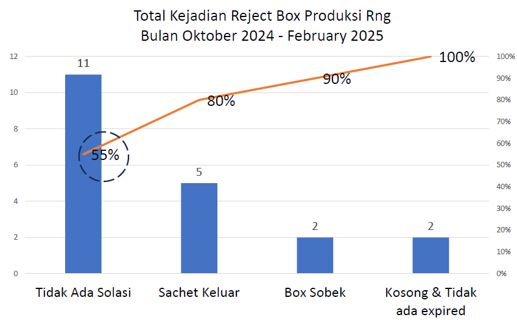

Dalam kurun waktu 5 bulan, kami mencatat 20 box yang harus direpackaging atau dibuang. Dari data tersebut diperoleh penyumbang terbesar reject tersebut adalah tidak ada isolasi sebesar 55% dari total reject box

Grafik 1: Data Reject Balikan Box (Unit/Bulan)